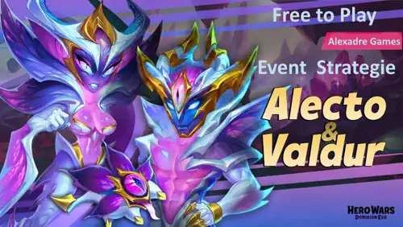

1. Alecto: Fall of the Veil
Alecto's release event combines the main Fall of the Veil quest chains with Rift Huntress, her personal development event. Wendy runs the Sapphire Medallion shop.
Alecto and Valdur and Echo arrive through two consecutive Distortion Titan events: Fall of the Veil followed by Judgment Day. Although their event structures are similar, their event currencies do not carry over. Treat each event as a complete cycle while preserving permanent Titan resources for the second release.
This combined guide focuses on the decisions that matter most to free-to-play players: when to begin, which missions overlap, how to use the Workshop, what to buy with Sapphire Medallions, and how to avoid losing value during the reset between Alecto and Valdur.

Alecto's release event combines the main Fall of the Veil quest chains with Rift Huntress, her personal development event. Wendy runs the Sapphire Medallion shop.
Valdur and Echo follow with Judgment Day and the Heralds of the Rift development quests. Fox replaces Wendy as the event shopkeeper.
Most important rule: Valor Coins, Sapphire Medallions, chapter Energy, and event Relics from Fall of the Veil reset before Judgment Day begins. Spend Alecto's event-only resources before her timer expires. Only permanent account resources, such as Titan Potions, Titan Skin Stones, Essence of the Elements, Gold, and Emeralds, can be reserved for Valdur.
Both Titans belong to the Distortion element and work well together, but their jobs are different. Alecto is the direct damage dealer; Valdur supplies summons, area damage, displacement, and faster Distortion Totem activation.
| Feature | Alecto | Valdur and Echo |
|---|---|---|
| Role | Marksman, position 6 | Summoner, position 25 |
| Main skill | Phase Breach: attacks the farthest enemy five times, deals splash damage, and makes Alecto invulnerable during the sequence. | Echoclasm: summons one lesser image per living enemy; each image explodes and pushes an enemy when it dies. |
| Extra mechanic | Back-line pressure and protected burst damage. | Counts as two Distortion Titans and generates 20% more Energy for Distortion Totem activation. |
| Best use | Eliminating vulnerable back-line Light and Darkness Titans. | Five-versus-five battles where multiple images create area damage and disruption. |
| First skin | Default Skin for Physical Attack. | Default Skin for Health and stronger images. |
| First artifact priority | Distorted Attack Seal, then Zorval's Wing. | Seal of Calling, then Zorval's Reins. |
My recommendation: players building a complete Distortion team should develop both. If permanent resources are limited, choose Alecto for immediate back-line burst or Valdur for summoning, disruption, and broader Distortion synergy.
Recommended team: No difficulty found here, Tenebris, Araji, Asherona, Alecto, Brustar.
Recommended team: Martha, Dorian, Keira, Ishmael, Lyria.
Talisman: All can be used.
Recommended team: Valdur, Hyperion, Tidus, Alecto, Sigurd.
This chapter is not so difficult, but level up titans are very necessary.
Recommended Talisman: brotherhood.
Recommended team: Khorus, Augustus(Albus), Orion(Khorus), Fluffy(Merlin), Dante(), Electra(Oliver).
This stage was a little difficult I lose some battles against the final boss, and was without resources to get more PET, all heroes was maxed. If you can't win, stack up buffs to help you succeed.
Recommended Titan Team: Araji, Solaris, Asherona, Amon, Moloch.
Toten Skills: Last Flash, Ice Age
Recommended Talisman: .
Recommended team: Khorus, Orion(Mara), Fluffy(Khorus), Cascade(), Krista()m, Electra(Oliver).
Recommended Titan Team: Eden, Solaris, Verdoc, Amon, Angus.
Reaching absolute star requires 3,130 Soul Stones per Titan, or 6,260 Soul Stones for both. That is the maximum target, not a guaranteed free-to-play result. Your real endpoint depends on live gifts, island pickups, Altar rewards, chapter costs, and the resources already saved on your account.
| Permanent Resource | Alecto Maximum | Valdur Maximum | Both Titans |
|---|---|---|---|
| Soul Stones | 3,130 | 3,130 | 6,260 |
| Titan Potions to level 120 | 1,009,660 | 1,009,660 | 2,019,320 |
| Titan Skin Stones for Default Skin | 354,960 | 354,960 | 709,920 |
| Unique Weapon Fragments | 18,400 Zorval's Wing | 18,400 Zorval's Reins | 36,800 |
| Essence for Weapon and Crown | 1,372,160 | 1,372,160 | 2,744,320 |
| Gold for Seal | 173,005,000 | 173,005,000 | 346,010,000 |
You do not need every maximum value to earn useful rewards. The development quests stop at 100 level-ups, Default Skin level 60, six stars on the featured weapon, and 360 combined Artifact levels. Set a realistic milestone and preserve enough permanent resources for Valdur's second event.
Fall of the Veil and Judgment Day use the same main mission structure. The featured stall heroes and personal Titan quests change, but the planning principles remain the same.
| Mission Chain | Final Objective | F2P Priority |
|---|---|---|
| Search for Truth | Win 71 event battles | Very High - begin immediately and use resets. |
| Old Values | Buy 120,000 Emeralds | Paid only - never purchase solely for the counter. |
| Sacrifice | Spend 150,000 Emeralds | Optional - stop at a natural milestone. |
| Dialogue of Cultures | Max seven Hero Stall heroes | Medium - later stages unlock more targets. |
| Loyal Friends | Buy 10 pets from the Hero Stall | High - purchases accumulate across resets. |
| Mark of Excellence | Earn 7,000 VIP Points | Paid only - use planned purchases only. |
| Elemental Ritual | Complete Development Shop targets | Medium - finish entries close to maximum. |
| Sapphire Shine | Spend 100 Sapphire Medallions | High when affordable - every shop offer advances it. |
| Objective | Alecto: Rift Huntress | Valdur: Heralds of the Rift |
|---|---|---|
| Level | 20, 40, 60, 80, and 100 level-ups | 20, 40, 60, 80, and 100 level-ups |
| Evolution | Reach six stars inside Birth of Will | Separate milestones at 2, 3, 4, 5, and 6 stars |
| Default Skin | Levels 5, 10, 20, 30, 40, 50, and 60 | Levels 5, 10, 20, 30, 40, 50, and 60 |
| Weapon Artifact | Zorval's Wing at 2 through 6 stars | Zorval's Reins at 2 through 6 stars |
| Combined Artifact levels | 14 milestones ending at 360 | 14 milestones ending at 360 |
| Growth Reward | 16 through 46 completed personal quests | 16 through 46 completed personal quests |
Do not upgrade too early: resources spent before an event opens may not count retroactively. Wait for the live quest screen unless the game explicitly confirms otherwise.
Improve the Tome first when it increases Valor Coin generation. Next, develop the Grail for the event economy you intend to use. Leave the battle-focused Amulet until your currency engine is stable.
| Order | Relic | Reason |
|---|---|---|
| 1 | Tome | Improves the economy early, so its value applies to more of the event. |
| 2 | Grail | Supports currency and reward efficiency after the Tome. |
| 3 | Amulet | Helps battles but normally returns less event currency. |

Altar data is not final: the supplied information does not confirm rewards, odds, currency, or live costs for either event. Do not copy Umbra's exact Altar calculations onto Alecto or Valdur. Check the live interface first.
The available headline rewards are the same in both seven-chapter events. The table shows the rewards for one event; completing both doubles every quantity.
| Chapter | Reward 1 | Reward 2 | Reward 3 |
|---|---|---|---|
| I | 50,000 Essence of the Elements | 10,000 Valor Coins | 1 Sapphire Medallion |
| II | 30 Large Skin Stone Chests | 20,000 Valor Coins | 2 Sapphire Medallions |
| III | 25,000 Titan Skin Stones | 20,000 Valor Coins | 2 Sapphire Medallions |
| IV | 20,000 Valor Coins | 2 Sapphire Medallions | 150 Primal Catalysts |
| V | 50,000 Valor Coins | 10 Sapphire Medallions | 100 Elemental Catalysts |
| VI | 50,000 Valor Coins | 10 Sapphire Medallions | 1 Gift of Dominion |
| VII | 1 Distorted Spirit Summoning Sphere | 50,000 Valor Coins | 10 Sapphire Medallions |
Total per event: 220,000 Valor Coins and 37 Sapphire Medallions. Total across both complete events: 440,000 Valor Coins and 74 Sapphire Medallions. Chapter VII is the premium goal, but F2P players should not assume it is free before live gifts and costs are known.
Each event-shop offer costs one Sapphire Medallion. Unique Titan Artifact Fragments are the hardest rewards to replace, so they normally come before generic hero equipment.
| Priority | Alecto Shop: Wendy | Valdur Shop: Fox |
|---|---|---|
| Very High | 500 Zorval's Wing Fragments | 500 Zorval's Reins Fragments |
| Very High | 500 Distorted Attack Seal Fragments | 500 Seal of Calling Fragments |
| Very High | 500 Crown of Distortion Fragments | 500 Crown of Distortion Fragments |
| High | 15,000 Titan Skin Stones or 250 Echo of Change | 15,000 Titan Skin Stones or 250 Echo of Change |
| Medium | 40,000 Essence or 20,000 Titan Potions when they unlock a quest | 40,000 Essence or 20,000 Titan Potions when they unlock a quest |
| Situational | Generic hero gear, EXP Potions, and replaceable resources after the Titan plan is covered. | |
Simple buying rule: buy unique Artifact Fragments first, then resources that immediately complete another event milestone. Use leftovers on account-wide resources.
The listed free and paid tracks use the same quantities, with the Titan-specific Artifact names changed. Their live ticket price and instant purchase package were not confirmed.
| Reward per Event | Free Track | Paid Track |
|---|---|---|
| Energy Crystals | 40 | 150 |
| Sapphire Medallions | 4 | 20 |
| Emeralds | 2,000 | 10,000 |
| Explorer's Moves | 4 | 40 |
| Featured Weapon Fragments | 200 | 1,000 |
| Featured Seal Fragments | 200 | 1,000 |
| Titan Skin Stones | 4,000 | 20,000 |
| Essence of the Elements | 30,000 | 150,000 |
| Titan Potions | 12,000 | 60,000 |
| Titan Artifact Spheres | 75 | 375 |
| Gold | 6,000,000 | 30,000,000 |
| Summoning Spheres | 15 | 75 |
Always collect the free track. Evaluate the paid track only after the live price is visible and compare it with the exact Artifact or Medallion shortfall for your chosen milestone.
The same published conversion rates apply at the end of each event. Direct spending is normally better when the shop contains an upgrade you need.
| Remaining Event Resource | Conversion |
|---|---|
| 1 Sapphire Medallion | 10 Titan Resource Chests |
| 3 Energy Crystals | 1 Titan Resource Chest |
| 1,500 Valor Coins | 1 Titan Resource Chest |
| 20 Buffs | 1 Titan Resource Chest |
| 2 Amulet Levels | 1 Titan Resource Chest |
| 1 Tome or Grail Level | 1 Titan Resource Chest |
Final inventory check: spend valuable Alecto currency before Fall of the Veil closes, then do the same before Judgment Day ends. Do not assume either shop remains available during conversion.
Alecto and Valdur are designed as a Distortion pair, but their consecutive events reward discipline more than all-in spending. Alecto brings protected back-line burst, while Valdur fills the field with explosive images and speeds up the Distortion Totem. Developing both creates the strongest synergy; choosing one lets a smaller account concentrate scarce permanent resources.
For F2P players, start battles early, collect every free source, improve the Workshop economy first, stack missions into each permanent upgrade, and buy featured Artifact Fragments before generic rewards. Above all, spend Alecto's event currency before the reset and enter Judgment Day with a separate Valdur budget.
Did this Alecto and Valdur event guide help you plan both new Distortion Titans? Which Titan will receive your permanent resources first? Join the Alexandre Games Blog comments to share your strategy, questions, and corrections.
Click the button below to get started: